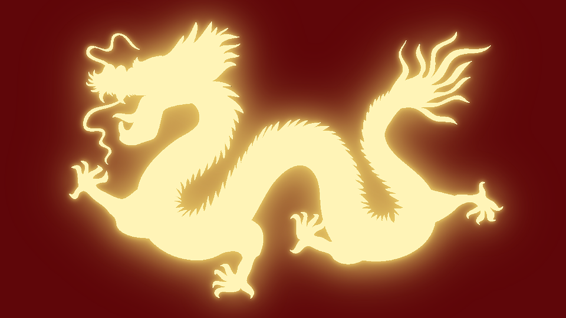

Dragons are one of the most well-known mythical creatures in literature. They have appeared in works all over the world, and through many years. They are especially prominent in Asian cultures, such as in China, where in the animal hierarchy, the dragon ranks the highest. This may be partially due to the fact that dragons are seen as a symbol for power, strength, and good luck. However, dragons are also common in Western literature, where they are seen as fierce creatures. The fact that two areas of the world that are so far away from each other both believe that the dragon is powerful shows that just how strong the dragon is seen to be, as this trait has become almost like an archetype of sorts.
Depending on who is asked, the dragon can take many forms, each one different from the last, but a common trait that appears in most, if not all, descriptions is that dragons are snake-like. After this, the descriptions take many routes. The general depiction of dragons in western culture is a winged, four-legged serpentine creature, while in eastern cultures, they are wingless, but have an above average intelligence level.
A dragon, as appears in Chinese culture.
In Western culture, dragons are usually depicted as being able to breathe fire. Oftentimes, they are seen as big, strong, winged creatures who are also intelligent. In Chinese culture, the dragon is said to have power over rain, which may be a part of why it’s a big part of Chinese culture (rain brings better crops, which leads to better lives through better food and more money, and without rain, people might die of thirst).
In 2005, Nick Bostrom created a story called “The Fable of the Dragon-Tyrant” and the YouTube creator CGP Gray narrated the story and animated it. It depicts a dragon who took over a kingdom, and demanded to be fed a certain number of humans every day, which numbered into the thousands. It was undefeatable, and eventually, most people gave up on trying to defeat it. In fact, they succumbed to it, and instead of trying to figure out how to defeat it, worked out the most efficient way to get the people to the dragons in the fastest way, which was through trains. Life went on in the kingdom as usual for centuries, but as science progressed, the scientists eventually figured out a missile that had a chance at killing the dragon by shooting it while it was on its mountain. Many people opposed it, as there had not been a single successful attempt at destroying the dragon in the past, and they thought that the effort was a waste of time and money. Some people even argued that the dragon was a part of their lives, and without it, they would not “live their life to the fullest”, as they would have more time on their hands and less things to worry about. However, the project to destroy the dragon was eventually funded by the king, and research began at once. Every person in the nation did what they could to help, be it through donations, funding, or research. It took over a decade, but eventually, the missile was made, and it was the day to launch it. However, a couple of minutes after the last train headed towards the dragon, a man came to the king begging for him to stop the train, however the king would not as the dragon might grow suspicious and realize that the people were scheming something. The man was devastated, but the missile was launched as usual, just after the last train had arrived at the dragon’s mountain. However, after the dragon had been killed, the man realized that through sacrificing his father, the rest of his family, as well as the rest of the kingdom, had been spared.
Through the man’s revelation, the story is a representation of the mistakes we, as human beings, must make for the better of ourselves and others. It’s also a representation of the fact that giving up before even trying, as the people did when they opposed the idea of the missile at first, can lead to drastic consequences. This is through the fact that had this project been started even a day earlier, thousands of lives would have been saved. It’s fitting for a story with such deep morals to be associated with dragons, as dragons are seen as incredibly smart, and to defeat an enemy, one must think like the enemy.
Return to the top of the page
Browse the list of mythical creatures.